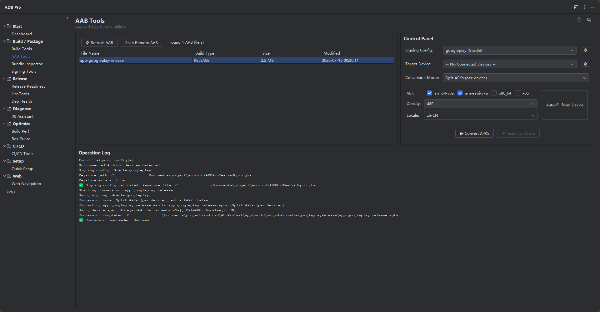

The most comprehensive Android App Bundle toolkit inside your IDE. Convert, sign, install, and manage bundles —all from one panel.

AAB Tools is the flagship module of ADB Pro, providing a fully integrated workflow for converting, signing, and installing Android App Bundles (.aab files) directly from your JetBrains IDE. At its core, it wraps Google's bundletool with a visual UI that handles binary management, device detection, and signing configuration automatically.
When you build an Android app for release, Gradle produces an .aab file rather than a directly installable APK. To test that bundle on a physical device or emulator, you need to convert it to a device-specific .apks archive, sign it with a valid keystore, and push it via ADB. AAB Tools consolidates all of these steps into a single panel, eliminating context-switching between the IDE, terminal, and file manager.
For QA teams and release managers, AAB Tools also supports scanning remote repositories (GitHub, GitLab) for release-candidate bundles, enabling a download-convert-install pipeline without ever leaving the IDE.
AAB Tools is also available as a free standalone JetBrains plugin from the ADB Pro ecosystem. Use it when you only need bundletool conversion and device installation. Stay with ADB Pro when you need the complete release workflow: signing verification, bundle inspection, release readiness, R8, resource obfuscation, CI/CD, dependency health, and build performance.
Working with Android App Bundles manually introduces friction at every step of the release pipeline:
build-apks, --mode=universal, --connected-device), and specifying output paths manually.adb install, and file manager. There is no single view that ties the build artifact to the installed result..aab file among multiple build output directories is error-prone, especially in multi-module projects with several flavor and build-type combinations.ADB Pro automatically detects .aab files produced by your Gradle builds and converts them to .apks archives using bundletool. The bundletool binary is downloaded, version-checked, and managed automatically by the plugin — no manual installation required. Conversion supports multiple modes including universal APKs for testing, device-specific splits for accurate installs, and standalone APKs for legacy device compatibility.
Once an AAB has been converted to APKS, ADB Pro handles installation to any connected device or emulator in a single click. The plugin manages ADB path discovery, device enumeration, and installation status reporting. Multi-device installs are supported, letting you push the same bundle to several targets sequentially without repeating the conversion step.
AAB Tools parses signing configurations directly from your build.gradle or build.gradle.kts files, populating keystore paths and key aliases automatically. Manage multiple keystores and key aliases through a favorites system for instant switching. All passwords are stored securely via IntelliJ's PasswordSafe API — credentials are never written to plain-text config files or shell history.
Configure GitHub or GitLab repositories to scan for AAB files attached to release assets. ADB Pro lists available bundles with version tags, download sizes, and upload dates. Download remote bundles, convert, and install directly — particularly useful for QA teams who need to test release candidates produced by CI/CD pipelines without requiring local build access.
AAB Tools automatically scans your project's build output directories (build/outputs/bundle/) for AAB files. The latest build artifacts appear instantly in the panel, sorted by modification time. No file dialogs or manual browsing required — the most recent AAB is always one click away.
When multiple AAB files are present —across different variants, modules, or external locations —the file selection dialog lets you pick the exact bundle to convert or install. It displays file name, size, modification date, and variant information for each candidate. You can also browse to AAB files outside the project directory, such as downloaded CI artifacts or bundles received from other developers.
Downloaded AAB files from remote repositories are cached locally so you don't need to re-download them for every install. The cache is managed automatically —older entries are cleaned up based on age and available disk space. Cached bundles are available offline, making it easy to re-install a specific release candidate without network access.
When converting AAB to APKS, ADB Pro supports multiple output modes: universal APK (a single APK for all devices), device-specific split APKs (optimized for a connected device's ABI, screen density, and locale), and standalone APKs for legacy device compatibility. You can filter splits by ABI (e.g., arm64-v8a only), screen density, or locale to produce leaner output for specific target devices. Your last-used conversion settings are remembered across sessions.
AAB Tools can read signing configurations directly from your build.gradle.kts files instead of requiring manual keystore input. Select from detected signing configs (e.g., release, debug) and the plugin automatically populates the keystore path, key alias, and prompts for passwords. This ensures the APKS archive is signed with the same credentials as your production builds, avoiding signature mismatches during install.
AAB Tools settings are accessible from Settings > Tools > ADB Pro > AAB Tools. From there you can configure:
Quick-access actions are also available under the Tools > ADB Pro menu: Quick Install AAB, Select and Install AAB, Convert AAB to APKS, and Install APKS File.
After using AAB Tools, confirm that everything worked correctly:
.apks file appears in the output directory alongside the original .aab after conversion.apksigner verify --verbose --print-certs app.apks to confirm that the signing certificate matches the keystore you selected.adb shell pm list packages | grep <your.package> to confirm the correct package name is installed on the device.build-apks, install-apks, and get-size.